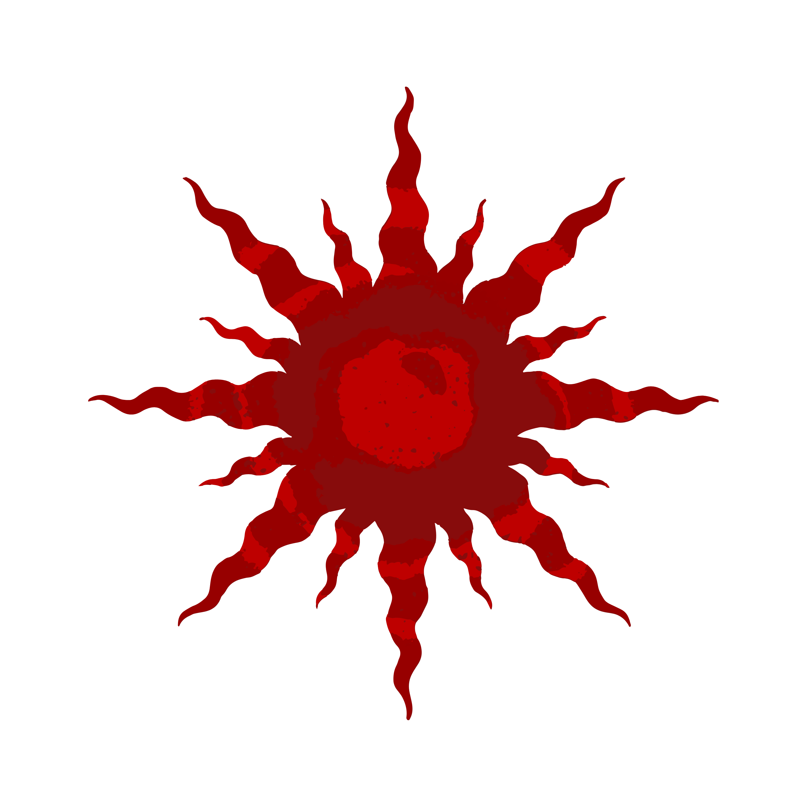
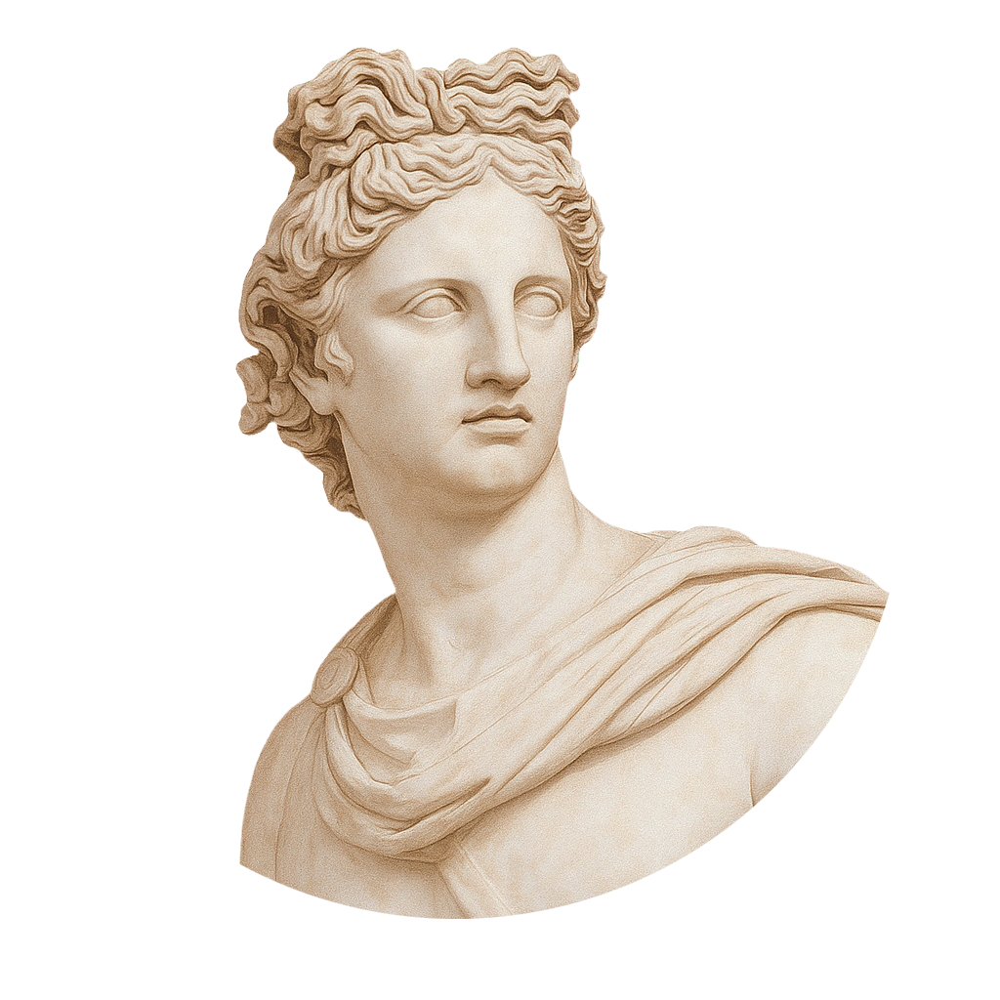

This season, we uncover Apollo's legacy, focusing on his vision, innovation, and change. We explore cyber security, astrophysics, entrepreneurship, technology, self-discovery, youth activism, and diversity, all inspired by his timeless fire. Join us in marching to Apollo's beat.
TEDxMaadiSTEM
Youth 2025
Apollo: What Lies Beyond



What is TEDx?
In the spirit of ideas worth spreading, TED has created a program called TEDx. TEDx is a program of local, self-organized events that bring people together to share a TED-like experience. Our event is called TEDxYouthMaadiSTEM, where x = independently organized TED event. At our TEDxYouthMaadiSTEM event, TED Talks video and live speakers will combine to spark deep discussion and connection in a small group. The TED Conference provides general guidance for the TEDx program, but individual TEDx events, including ours, are self-organized.
Read more about TEDx